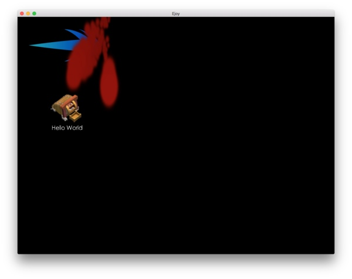

Ejoy2d环境搭建爬坑指南
今天在 Github 上整理自己 star 的项目，再次翻到了 ejoy2d 这个项目，它是一款云风发起的开源 2d 游戏引擎，他自己的公司正在用这款引擎进行商业开发，据说这款c写的引擎能更好的和 lua 结合，还没有细看引擎的代码，但是相比 cocos2d-x 引擎，ejoy2d 的代码文件要少得多，给我一种小巧简洁的感觉。肯定要抽时间读一读它的代码，应该能更好的学习游戏引擎开发 :)
为什么要说“又”翻到了这个项目呢？因为第一次接触到这个项目的时候就尝试着想跑一下它的 example 看看效果，但是，当时刚开始用 Mac，没有成功的配置好它的运行环境。这次想再试试，让项目跑起来，也开始研究学习下这个引擎代码。
根据当前版本的 README：
For Mac OS ,
- Install glfw3
- Install freetype 2
- make or make macosx
- ./ej2d examples/ex01.lua to test
用 homebrew 安装 glfw3 和 freetype2
|
|
在「Other Linker Flags」中加入-lfreetype和-lglfw3
直接编译mac/example/example.xcodeproj
需要配置一下头文件和库文件的搜索路径，在「Build Settings」里给「Header Search Paths」加上/usr/local/include/freetype2，给「Library Search Paths」加上/usr/local/lib。
再次编译，仍然会报出glfw3的很多错误，在这篇帖子中找到答案，需要添加Cocoa,IOKit,CoreVideo 3个系统库依赖。
之后还需要在「Other Linker Flags」中加入-undefined dynamic_lookup。
编译通过。
